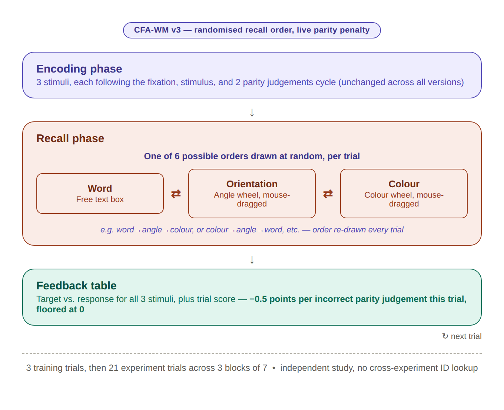

aphantasiaWMStrats is a data analysis project and an Extended Online Report (see below) wrapped in an R package for reproducibility1. It contains the data and code for the Working Memory Feature Trade-off Task (WM-FTT), an original paradigm built to ask which kind of mental representation people actually rely on the most when remembering and find behavioural correlates to their subjective reports. The project is archived on the Open Science Framework here.
The question, and the task built to answer it
Aphantasic individuals perform about as well as typical imagers on visual working memory tasks despite reporting no voluntary visual imagery, and they say they compensate with verbal or spatial strategies instead. That self-report is lacking objective evidence associated with it. WM-FTT was designed to surface the trade-off behaviourally: every stimulus carries three features at once, a word, an orientation and a colour, scoring gives partial credit per feature, and participants are told to maximise their score. If effort has to be divided, where it goes is a measurement rather than a claim.

The task ran in three versions, which successively changed small features of the task to adjust the incentive mechanisms. Each version exists because the previous one’s own data showed a specific way the design was undermining its own measures. That story is told in full on the task design page.
What is in this package
The package ships the pooled dataset as a built-in table, all_data: one row per presented stimulus across all three task versions, with recall responses, scores, questionnaire scores and raw questionnaire items. It also contains the scoring functions that produce those scores from the raw responses, and the scripts and vignettes that document how every number was arrived at.
Beyond any eventual article, this project is documented as an Extended Online Report (EOR): a structure of interlinked, executable pages that go past what a Methods section can carry, including the reasoning behind each measurement choice and the problems found along the way.
The pages are ordered so that no quantity appears before the page that defines it. Everything from Scope onward is conditional on the version decision, which currently all runs on v1.
What was measured
- Task design: what participants actually did, screen by screen, and why the task changed twice. The points-per-feature incentive introduced here is what makes the later analyses interpretable.
- The participants: who took part, and the recruitment differences between task versions.
-
Scoring: how raw responses become the scores in
all_data, why the task’s own in-browser scores are not used, and what the resulting measures will and will not support. - Task engagement: the two independent ways participants could ignore parts of the task, and why neither is a nuisance to control away. Declining to report a feature turns out to be an allocation decision rather than missing data, which is the premise one of the models rests on.
Scope
- Versions: which of the three task versions enter the analyses, and why the others are described rather than modelled.
Does anything here measure anything?
- Task validity: split-half reliability per feature and the stability of the compositional coordinates. One of the three features does not survive as an individual-differences measure, which constrains how every later result may be read.
- Questionnaire psychometrics: how the VVIQ (visual imagery), OSIVQ (cognitive styles) and NIEQ (inner experience) behave in this sample.
Confirmatory modelling
Imagery groups fixed in advance.
- The analysis: what is modelled, and why: why declining to report a feature is treated as a behaviour rather than missing data, how imagery enters every model, and what was fixed before any model was fitted.
- Composition: the primary analysis. Relative allocation across the three features, independently of overall performance. Participants at the imagery floor divide effort differently; cognitive style does not predict it, one dimension of inner experience does, and participants’ own accounts of what they were doing converge with the behaviour.
- Performance: the same data read as absolute per-feature accuracy.
- The joint model: whether the primary analysis was entitled to condition on responded trials, plus two findings no other page can reach: willingness to report is a strong individual trait, and there is no between-person trade-off between features.
Exploratory modelling
Groups not fixed in advance, and labelled exploratory throughout.
- Beyond vividness: whether the questionnaires contain structure the imagery split misses. As a group structure, no. On one dimension, yes: reported unsymbolised thinking rises steadily as imagery vividness falls, across the whole range rather than at the floor. That is a claim about what low-vividness experience is rather than what it lacks — and a gradient, not a property of complete aphantasia specifically.
Technical
- Model diagnostics: convergence, and posterior predictive checks for each of the three response families.
- Implementation notes: fitting defaults, prior conventions, and why the model formulas are exported objects rather than code inside a script.
- What was tried and withdrawn: the findings this project reported and then removed, and what removed them.
Reference
-
Codebook: every column in
all_data, with its type, range and meaning.
If you would rather get straight to using the package, the Get started page is a short, practical introduction to the data and the scoring functions.
The source of every page above is in the vignettes/ folder of this repository.
Installation
You can install the development version of aphantasiaWMStrats from GitHub with:
# install.packages("pak")
pak::pak("m-delem/aphantasiaWMStrats")Alternatively, clone the repository, open the aphantasiaWMStrats.Rproj file in RStudio, and run:
devtools::load_all()which will load the package and make its functions and data available in your R session.
A note on names
The task is called WM-FTT in writing. Its internal name during data collection was CFA-WM, and that name survives in column prefixes, OSF component names, file paths and the front-end code. Those identifiers are deliberately unchanged so that exports stay comparable with earlier ones and with the raw data on the lab server. The two names refer to the same task.
Citation
This repository is archived in the OSF project, which assigns a permanent DOI to the code and data. If you use them in your research, please cite:
Delem, M. (2026, August 21). Working memory representational strategies in aphantasia (WM-FTT). https://doi.org/10.17605/OSF.IO/3649S